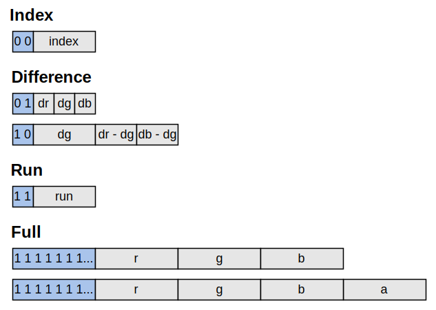

In this article we will show how to implement an image encoder and decoder for the QOI (Quite OK Image) format, a relatively new image format created by the game developer Dominic Szablewski that has generated a lot of interest recently in the computer graphics community due to its simplicity.
QOI is a very simple lossless image format that is easy to understand and fast to encode, yet compresses images to a comparable size as the much more complex PNG image format. Thus it sits between BMP (uncompressed) and PNG (compressed) in term of compression ratio. The author claims that QOI is 3-4x faster than PNG to decode and 20-50x faster to encode!
If you are new to image formats we recommend looking at our previous article on BMP in which we show how to build an image viewer, capable of loading BMP images. We will extend the same image viewer to QOI in this article.
QOI is a good introduction to lossless data compression, meaning that the original image can be recovered exactly without any loss in quality.
Data can usually be compressed much further by accepting a loss in quality, those methods are said to be lossy and are much more complex as they exploit the limits of perception of the human visual (or auditive) system. In other words, things that humans cannot see (or hear) are removed from the data. This is what the JPEG format does for images. As you might have noticed, those methods end up being very specific to the kind of data to compress (image, sound, video...).
How can we make the files smaller without loosing any information neccessary to be able to recover the original file? This is achieved by taking advantage of redundancies in the data. We find repetitive patterns and replace them by an equivalent compressed representation. Files can only be compressed if they have a lot of redundancy, there is no magic here. In practice raw data is usually not encoded the most efficient way and is compressible.
One of the simplest technique to do lossless data compression is RLE (Run Length Encoding). Say we have the following data:
1 | |
Each number can fit in a single byte so the whole data takes 10 bytes. This is the most straightforward and naive scheme possible but we can encode it more efficiently by noticing the repetition of "5" and "3":
1 | |
This encoding scheme is known as RLE and compresses the data to 6 bytes, a 40% decrease in size! Notice that the longer the repetition, the more the data can be compressed.
An image can be compressed that way but since it is rare to have repetitions of pixels with exactly the same value, it is not very effective. Images are made of pixels with 3 color channels (R,G,B) so instead of doing RLE on bytes it makes more sense to do it on pixels, groups of 3 bytes:
1 | |
The QOI compression algorithm essentially chooses between 4 techniques to compress each pixel or a group of pixels:
Those methods were choosen to tradeoff quality with complexity after surely many iterations while testing with all kind of images.
We have already seen the first method in the section above on data compression. The specific implementation of RLE used in QOI is a bit different however. A run is defined based on the previous pixel decoded. It uses 6-bit to store the run-length The run-length is stored with a bias of -1 to avoid length of 0 2^6 = 64 [0-63] -> [1,64], 63,64 are illegal and reserved. so the range is 1..62
If a repetition is not detected we can use the next best thing and send an index to a previously seen pixel instead. QOI keeps a buffer of 64 pixels that have been previously seen at any time, those are not necessarily the last pixels seen up to that point. Each time a new pixel is decoded it is added to this buffer by using a hash function:
1 2 3 | |
Pixels that are physically very close to each other usually vary slightly in value but it is rare that they have the exact same value. RLE with some margin to find instead of sending the pixel value, we can send the difference with the previous pixel.
green channel : human most sensitive to green, able to distinghish between many more shades of green than red or blue.
The last method is used when we are out of options and none of the previous ones worked or resulted in compression. In that case we just send the raw pixel in the order R,G,B,A (RGB or RGBA).
One thing to notice is that none of those methods take much advantage of the specific properties of images. To keep things simple QOI treats the image as a single 1D stream of pixels and not a 2D grid like PNG does. The compression method is thus not able to detect the 2D spatial redundancies that are common in images. This is probably one of the reason why PNG is more efficient.
Now that we have seen how QOI compresses images, let's analyze the actual file format. A QOI file starts with a fixed size header followed by a list of chunks containing the compressed pixels data.
1 2 3 4 5 6 7 | |
The header contains only the essential information to decode the image, nothing else. The first few bytes of the header are the file signature, also known as the magic number of the file, and is only used to identify the type of file. The signature for QOI is "quoif" in ASCII characters.
The width and height of the image follows the file signature. Annoyingly they are encoded as big-endian, pressumably to make those values easy to see when looking at the raw binary data. We need to convert them to little-endian by using a routine like this:
1 2 3 4 5 6 7 | |
The number of color channels (3 for RGB and 4 for RGBA) is specified in the channels field.
Finally colorspace contains the type of color space in which the image is encoded:
1 2 3 4 | |
Images are encoded row by row from left to right, top to bottom. The compressed pixels data consists of a series of chunks varying in size. Each chunk starts with a 8-bit or 2-bit tag identifying the type. A chunk can have up to 4 bytes of data bytes following its tag.
There are 6 types of chunks corresponding to the different compression methods:

Conveniently, all chunks are byte aligned which allow us to treat it as a single byte stream. The stream should end when all the pixels have been decoded but the end of the stream is also marked with the following sequence of 8 bytes:
1 | |
Loading a QOI image necessiates to open the file, parse the header, allocate a buffer for the pixels and decode the chunks. After our explanation on the QOI file format and its compression algorithm, you should be able to write an image decoder and we encourage you to do so before looking at the implementation below as it is a great learning exercise to validate that you understand the format correctly.
An implementation for a QOI decoder could look something like:
1 2 3 4 5 6 7 8 9 10 11 12 13 14 15 16 17 18 19 20 21 22 23 24 25 26 27 28 29 30 31 32 33 34 35 36 37 38 39 40 41 42 43 44 | |
To avoid making unecessary fread() syscalls, we read the whole byte stream of chunks all at once and store it in a temporary buffer named bytes.
The code to decode the chunks (the core of the compression algorithm) is as follow:
1 2 3 4 5 6 7 8 9 10 11 12 13 14 15 16 17 18 19 20 21 22 23 24 25 26 27 28 29 30 31 32 33 34 35 36 37 38 39 40 41 42 43 44 45 46 47 48 49 50 51 52 53 54 55 56 57 58 59 60 61 62 63 64 65 66 67 68 69 70 71 72 73 74 75 76 77 78 79 80 81 82 83 84 85 86 | |
This is the whole thing! It is pretty amazing to see that compressing images efficiently could be that short and easy to implement.
Note that for convenience this code uses a union with an anonymous struct to treat RGBA values sometimes as a u32 and sometimes as four u8 components:
1 2 3 4 5 6 7 | |
We have seen how to implement an image decoder but to create a QOI image, we must write an encoder. An image encoder is usually much more complex than a decoder and slower to run. QOI has been designed with the goal of making a very fast encoder (and decoder). It achieves this objective primarily because of its simplicity, sacrificing compression ratio in favor of speed.
This concludes our article on ...
In this article we have omitted proper errors handling to keep the code short, please see the full source code available on GitHub for more details.